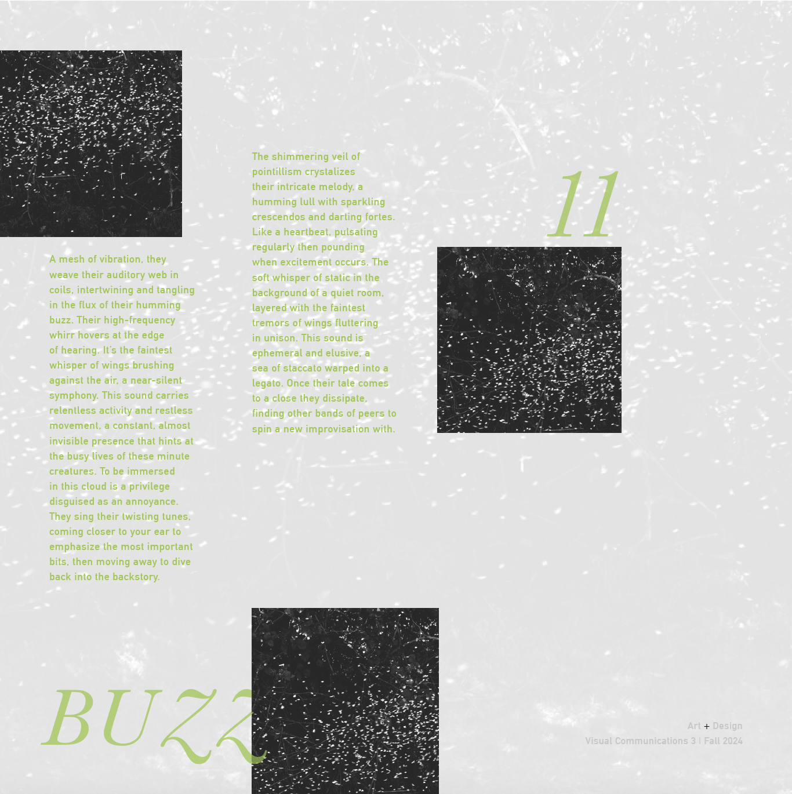

Murmurs is a visual compilation of city sounds. The city is misunderstood. The facade of brightness and cacophony is simply there to shoo away those who aren’t willing to truly listen; to feel the undertow of the city. To tap into the current beneath the shrills and listen to the rhythms and hums is an act of meditation. They are every bit as vivid as the aggression of the visuals, they just don’t get recognized as often. Enjoy navigating the murmurs beneath the melody.
